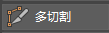

您可以使用“多切割工具”(Multi-Cut Tool)在一次操作中分割一个或多个网格上的多个多边形面。访问“多切割工具”(Multi-Cut Tool)的方法：
- 访问建模工具包(Modeling Toolkit)窗口的“工具”(Tools)部分，然后单击 。
- 选择“网格工具 > 多切割”(Mesh Tools > Multi-Cut)，访问主菜单栏。
- 选择“多切割工具”(Multi-Cut Tool)（以打开标记菜单，在选中对象、边或面后，按住 Shift 键单击鼠标右键），访问标记菜单。
还可以使用
“多切割工具”(Multi-Cut Tool)执行以下操作：
- 在曲面上希望有更多弯曲的位置（如角色的肘部或膝盖）添加边。
- 切片后删除模型的一部分。（此运算类似于布尔差集运算。）
- 可用于添加曲面分段，使网格与实时引用曲面更好地保持一致。
- 通过切去一部分，沿镜像轴创建清理边来准备用于镜像的模型。